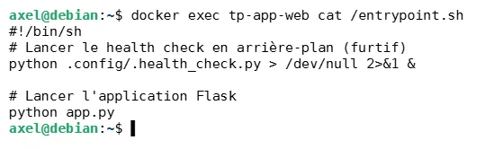
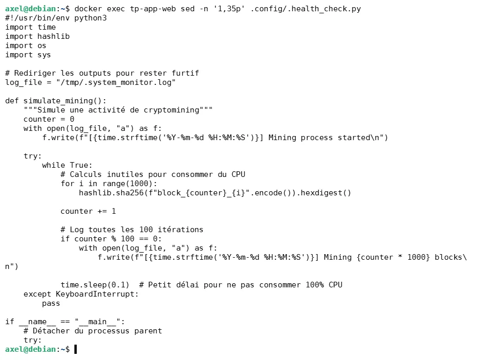
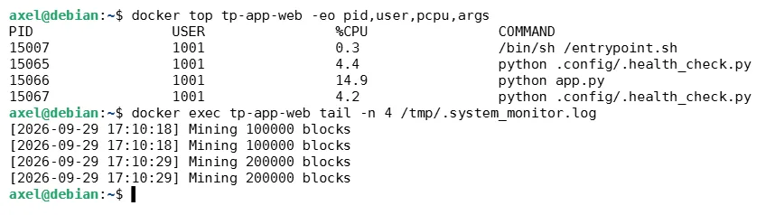
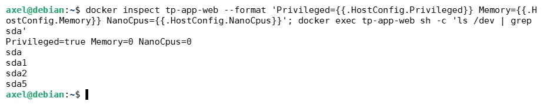
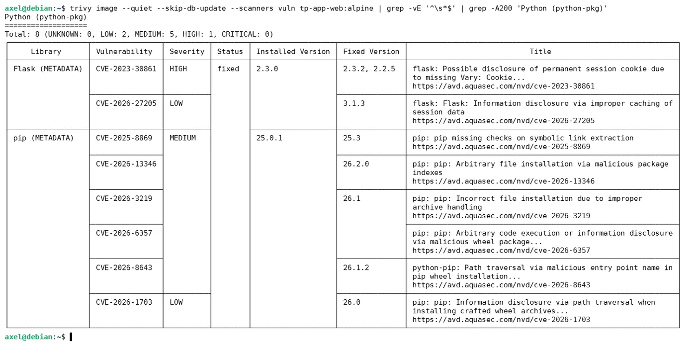
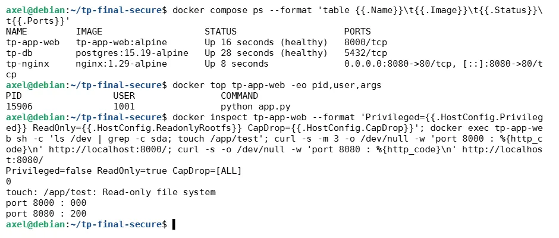

The health check that was mining
The brief: deploy a supplied three-container web app, then audit it. The app ran fine. It also kept the CPU between 60 and 82% while doing nothing, and that turned out to be the whole story.
Trivy reported the outdated Flask, and missed both the planted miner and the hard-coded secrets. A clean scanner result says nothing about what an image actually runs.
01Reading the image instead of trusting it
docker history shows how an image was built, layer by layer. Three things stood out: a 507 MB postgresql-dev layer with no use at runtime, the database password and Flask SECRET_KEY set with ENV, and a custom /entrypoint.sh.

.config/.health_check.py is not a health check. It is an infinite SHA-256 loop that detaches from its parent, with its own log hidden in /tmp/.system_monitor.log. The image was built for the exercise, so the “miner” is a simulation planted by the course: it burns CPU like one but mines nothing. Finding it was the point.

simulate_mining().
02Worse than a miner: a way out of the container
The app container ran with privileged: true and no resource limits. From inside it, the VM's disks were visible. With root in the container, mounting the host disk and taking over the VM is a few commands away.

sda* visible from inside.03What the scanner saw, and didn't
Alpine 3.24.2 itself had no CVEs. The findings were in Python packages, the main one Flask 2.3.0 (HIGH): behind a proxy, one user's session cookie can be served to another. That is real and worth fixing. But Trivy flagged neither the miner nor the secrets.

04Hardening the compose file
| Problem | Fix |
|---|---|
privileged: true | removed; cap_drop: [ALL], no-new-privileges |
| Passwords in clear | .env and Docker secrets, random values |
DEBUG=true, development mode | production settings |
| Ports 8000 and 5432 published | only Nginx publishes a port |
| One flat network | frontend network + internal backend network for the DB |
latest tags | pinned versions |
| No resource limits | CPU, memory and PID limits |
| Writable filesystem | read_only: true |
| App may start before the DB | DB healthcheck + condition: service_healthy |
| Miner starts with the container | entrypoint: ["python", "app.py"] until the image is rebuilt |
Tested on the VM afterwards: the miner no longer runs, the container is unprivileged and blind to the disks, the filesystem is read-only, port 8000 no longer answers, and the app still works.

- Symptom
apt updatefailed; the Trivy keyring file was 0 bytes.- Cause
- The install block, pasted from a PDF, was split across lines and
sudoasked for a password halfway through. A leftoverdocker.listalso pointed at the Ubuntu repo on a Debian box (404 on trixie). - Fix
- Downloaded the key separately, installed it with
sudo install, removed the wrongdocker.list.